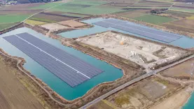

AKTUELLE BERICHTE
Stromgewinnung Politisches Strompreise Klima
-
Erneuerbare Energien
Erneuerbare Energien gehören zu den wichtigsten Stromquellen in Deutschland,
und ihr Ausbau ist eine zentrale Säule der Energiewende. Unsere
Energieversorgung soll klimaneutralwerden und uns gleichzeitig unabhängig vom Import
fossiler Brenn-, Kraft- und Heizstoffe machen.Ganze artikel lesen
-

Solar-Start-up Enpal verdoppelt
Bewertungauf 2,25 Milliarden EuroDer Vermieter von Solaranlagen erlebt derzeit einen Boom und
vervierfacht den Umsatz. Das lockt nun neue Investoren.
Der Unternehmenswert nimmt deutlich zu. Ganze artikel lesen
-

Baywa RE hat in Österreich 24,5 Megawatt
schwimmende Solarstromleistung gebautDie Anlage schwimmt auf zwei Seen einer ehemalige Sand-und Kiesgrube.
Die Planung und Umsetzung war nicht ohne Herausforderungen.Ganze artikel lesen
-

Erneuerbare Energien
Atomkraft raus, Wind und Sonne rein - das ist der Kern der deutschen Energiewende.
SPIEGEL.de zeigt, was der Wandel hin zur alternativen
Energieerzeugung für den einzelnen Bürger bedeutet.Ganze artikel lesen
-

Bund entlastet Gas- und
Wärmekunden mit 4,3 MilliardenBei der Dämpfung der Energie-Kosten bedient sich der
Bund verschiedener Instrumente. Bei der Dezember-Soforthilfe
für Gas- und Fernwärmekunden zieht die
Regierung nun eine Zwischenbilanz. Ganze artikel lesen
-
Stadtwerke erwarten Verdoppelung
der Gas- und StromtarifeDie Energiekrise sei zwar nicht mehr ganz so dramatisch,
aber nicht vorbei, mahnen die Stadtwerke. Langfristig müssten
sich die Verbraucher auf hohe Gas- und Strompreise einstellen. Ganze artikel lesen
-
Energiepreise deutlich gestiegen
Laut Destatis stieg der Importpreis von Gas um
rund ein Viertel, der für Strom verteuerte sogar um 46 Prozent. Ganze artikel lesen
-
Uniper rechnet mit deutlich
geringeren Verlusten für 2022Die Verluste beim Energiekonzern
Uniper sind nur halb so hoch ausgefallen, wie zunächst
befürchtet – rund 19,1 Milliarden Euro. Ganze artikel lesen
-

Wirtschaft warnt wegen
Energiepreiskrise vor AbwanderungWirtschaftsverbände beklagen: Bei den Energiepreisbremsen gibt
es Bremsen für Firmen, um sie in Anspruch zu nehmen.
Viele Firmen würden sie erst gar nicht beantragen, mit Folgen. Ganze artikel lesen
-
Die EU-Staaten ringen um den
StrompreisParis fordert eine Radikalreform des EU-Strommarktdesigns.
Kann Berlin das zumindest ausbremsen? Die Interessen der
Mitgliedstaaten weichen stark voneinander ab.Ganze artikel lesen
-
Siemens Energy baut bei Stromerzeugung die
Zusammenarbeit mit dem Irak ausDer Münchner Dax-Konzern soll im Irak die Strominfrastruktur
verbessern. Geplant ist der Bau konventioneller Kraftwerke und der
Ausbau erneuerbarer Energien. Ganze artikel lesen
-
Klimaschutz- und Energiepolitik in
DeutschlandMit der Energiewende hat die Bundesregierung die Weichen für einen
grundlegenden Umbau unserer Energieversorgung gestellt. Stromverbrauchende
Geräte, Gebäude und der Verkehr müssen deutlich effizienter werden. Energie wird in wachsendem
Maße aus erneuerbaren Energieträgern bereitgestellt.Ganze artikel lesen